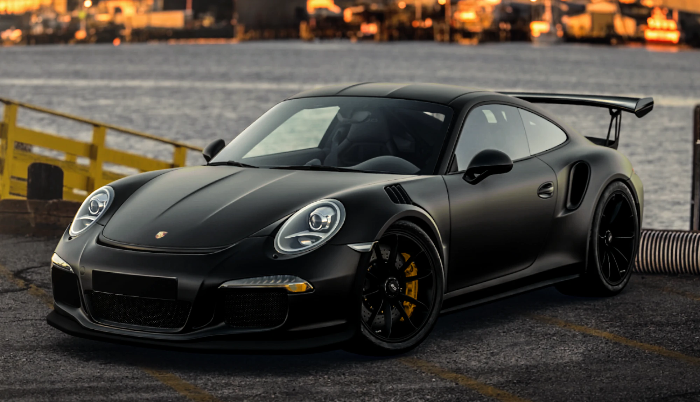
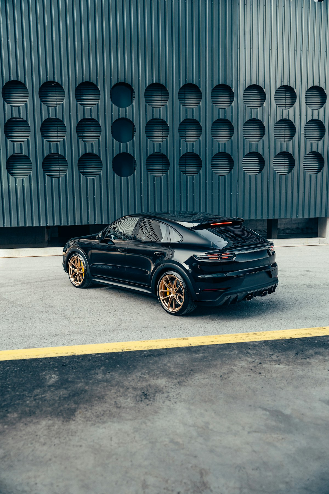

Характер —
в деталях.
Полировка кузова и защитная плёнка. Подбираем уход по состоянию автомобиля и вашим планам.
Выбрать уход
Красивый автомобиль —
тот, о котором заботятся.
Сначала смотрим.
Потом предлагаем.
Начинаем с осмотра под направленным светом. Проверяем лак толщиномером, отмечаем сколы и следы прошлых работ. Потом — разговор о том, какой результат нужен вам.
Где-то достаточно восстановить одну деталь. Где-то стоит защитить переднюю часть плёнкой. Объём и стоимость согласуем до начала работы.
Расскажите о своей машинеЧто нужно
вашей машине?
Стоимость зависит от размера автомобиля
и состояния поверхностей. Ниже — ориентиры
для легкового автомобиля.
Полировка кузоваВернуть глубину цвета и убрать мелкую риску1–2 дняот 22 000 ₽
Деликатная мойка, очистка от битума и металлических вкраплений, проверка толщины покрытия. Подбираем связку пасты и круга на тестовом участке, затем полируем и проверяем результат под инспекционным светом.
Защитная плёнкаСохранить лак на участках, которые принимают удар2–5 днейот 90 000 ₽
Базовый комплект: передний бампер, капот, передние крылья и зеркала. Готовим поверхность перед оклейкой, согласуем границы покрытия и расположение стыков. Полная оклейка кузова рассчитывается отдельно.
Керамическое покрытиеОблегчить мойку и подчеркнуть блескот 1 дняот 18 000 ₽
Очищаем и обезжириваем кузов, наносим состав и выдерживаем его по инструкции производителя. Если лак требует полировки, сначала согласуем её стоимость. Само покрытие царапины не устраняет.
Химчистка салонаОчистить обивку, кожу и труднодоступные места1–2 дняот 16 000 ₽
Подбираем средства отдельно для кожи, ткани и пластика. Очищаем сиденья, ковролин, дверные карты и багажник. Уделяем время сушке: автомобиль выдаём с сухим салоном.
Цены и сроки приведены для примера. Это концепт вымышленной студии.

Родной лак
стоит
сохранить.
Каждая абразивная полировка снимает часть покрытия. Поэтому сначала делаем тестовый участок и оцениваем, какой коррекции достаточно. Остаточные глубокие следы обсуждаем с вами.
При выдаче осматриваем
машину вместе — под светом,
в котором виден результат.
Перед визитом
Нужно ли мыть машину перед осмотром?
Специально мыть не нужно. Для оценки покрытия поверхность должна быть чистой — подготовку обсудим при записи.
Можно ли назвать точную цену по фото?
По фотографиям можно оценить объём и дать ориентир. Точная сумма зависит от состояния лака и загрязнений, поэтому окончательный расчёт делаем после осмотра.
Начнём
с вашей
машины.
Какая модель? Что хочется исправить?
Выберите услугу — покажем ориентир.